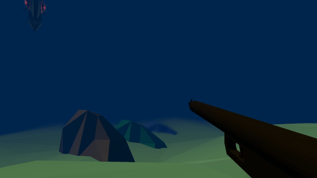

Here's the games I've worked on. Some of them are more experiments with using different tools or design ideas, and aren't really "fun" or "playable". Some of the games listed here are on my itch page!
All-Seaing Fisheye (2025)
Made for Sabby Jam 2025, theme "vision". It's a fairly basic fishing game where you fish up fish and read their minds. The mechanics are based on Streetpass Fishing, the DLC fishing game from Streetpass Mii Plaza for the 3DS. The variopus values could use a bit of dialling in, but I'm overall pretty happy with it.
Game-A-Week Stuff (2025)
I made several games for Game-A-Week 2025! Click here for the itch collection to see details on each.
Torch Ball Prototype (2021)

A Unity experiment mostly about modeling and music stuff. It's a "puzzle" game where you light torches with their corresponding fire colour.
Stel (2020)

My friends and I's university capstone project, which was featured in the ACMI+RMIT 2020 Audience Lab. You play as a boy trying to find a cure for his fathers illness, so you have to go through a series of trials. I worked mostly on the UI, inventory and interaction systems, as well as miscellaneous other bits like the sled. Full credits can be found on the itch page.
Steering Not Included (2018)
A game made for a university jam, where the requirement was minimum controls. It's an arcade-y "Asteroids" inspired game where each player has one "fire" button for their little spinning turret thing, which also gives it momentum. The goal is to be the last one standing.
Unfinished Stuff!
Some other unfinished stuff!
Tooth Fish (2022)

Made for 7dfps 2022, you play as a diver hunting mutant fish with a harpoon gun. We intended to add two more large fish and audio, but haven't gotten around to it as of writing. My first attempt at using Godot, too!
Tale of Bear² (2020)

Another project for uni my friend Artemis and I worked on, it's a turn-based RPG where you play as a teddy bear doing quests for other plushies. I worked mostly on the combat system. Also it's pronounced "Bear Bear".
Flicker (2018)

My first attempt at a game jam (Extra Jam 2018), prompt "present". You play as a little fire sprite and have to lead a kid to the exit while avoiding ghosts and collecting fuel to maintain your brightness (which the ghosts can't enter).